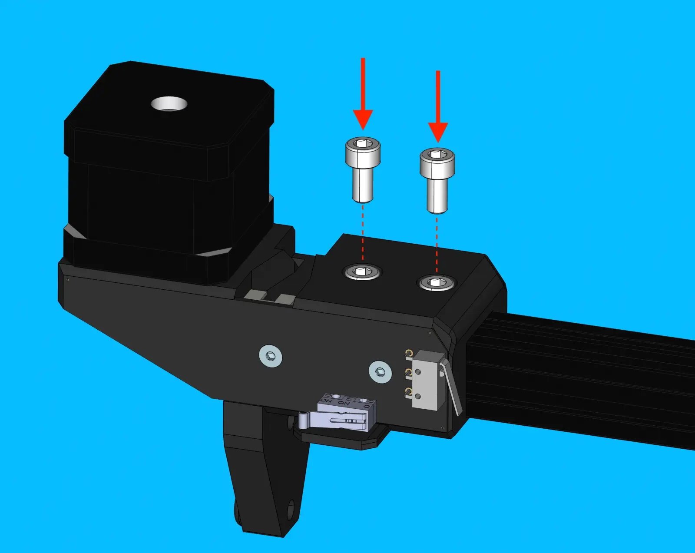
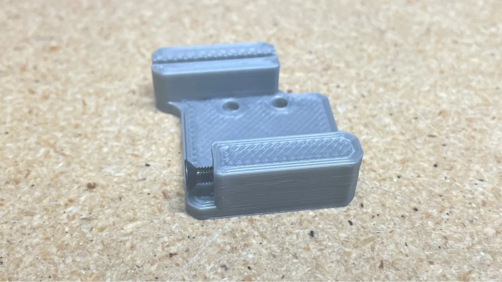
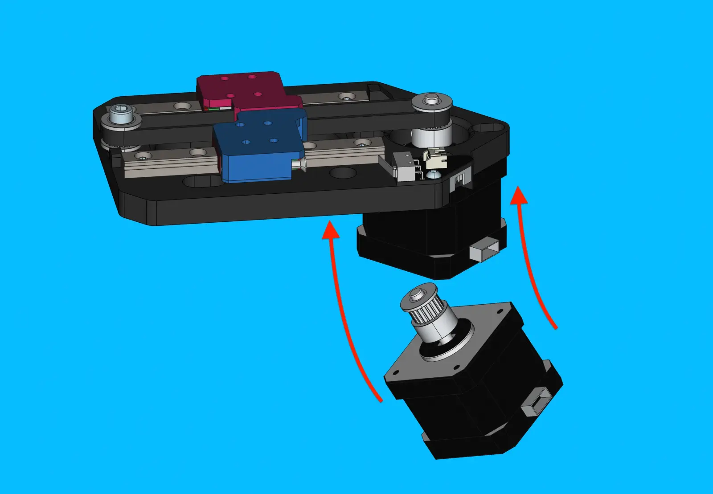
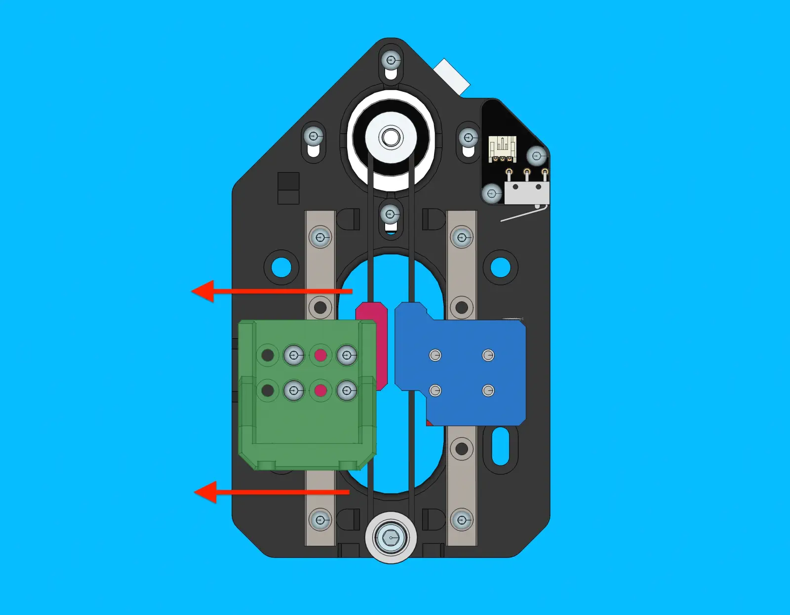

Preparing x-gantry
Create x-linear-axis subassembly
Prepare x-gantry-back
Install fasteners
- Remove any stringing from the print with a heat gun
-
Insert 4x
m5-hex-nutinto the following region -
Insert 5x
m5-hex-nutinto the following region- Add a drop of
blue-loctiteinto each of these pockets to permanently secure each nut in place
- Add a drop of
Check top-camera focus
-
Use
top-camera-focus-jigto check focus oftop-camera -
Connect
top-camera-focus-jigto a laptop and open a native camera viewing application -
Remove
lens-capfromtop-camera -
Install the
top-camerafully into thetop-camera-focus-jig, plugging the USB cable into the camera module afterwards -
In Photo Booth, change the selected camera to
LumenPnP Topto view the camera feed fromtop-camera
If the datum-board is sharp and nicely focused continue onward
If the datum-board is blurry and out of focus, follow instructions below
-
Loosen
set-screwon side of lens body
-
Rotate camera lens until live view shows
datum-boardas focused as possible -
Once the camera is refocused, tighten
set-screwto preserve the adjustments
- Remove the
top-camerafromtop-camera-focus-jigand immediately replacelens-cap
Install top-camera and top-ring-light into x-gantry-back
-
Install
top-camerainto x-gantry-back -
Install
top-ring-lightintotop-light-mount -
Install
top-light-mountonto back ofx-gantry-back
-
Secure
top-light-mountin place with 2xM3x12-self-tapping-flat-head
Prepare NEMA-17-stepper-motor for x-linear-axis
-
Set
timing-pulleyheight onNEMA-17-stepper-motorshaft withx-pulley-spacer-jig -
Tighten the first
set-screwinto the flat region found on theNEMA-17-stepper-motorshaft, before tightening the secondset-screw- Tighten each
set-screwto 0.5 N/M
- Tighten each
Install NEMA-17-stepper-motor onto x-motor-mount
-
Orient
NEMA-17-stepper-motorontox-motor-mountso that the motor's connector is facing the backside of the print as shown in the image below -
Bolt
NEMA-17-stepper-motoronto x-motor-mountwith 4xM3x8-bolt- Tighten these bolts to 0.5 N/M
Install XY-limit-switch-board onto x-motor-mount
-
Install
XY-limit-switch-boardontox-motor-mountand secure it with 2xm3x12-self-tapping-flat-head-screw- Tighten each screw in place with the electic torque driver
Install belt-tensioner-arm onto x-idler mount
-
If you have not already done so, assemble 1x
belt-tensioner-armFor reference building this sub-assembly, visit the Y Gantry OHAI page
-
Install 1x
M5-lock-nutintox-idler-mount -
Install
belt-tensioner-armontox-idler-mount -
Bolt
belt-tensioner-armtox-idler-mountwith 1xM5x40-socket-head-bolt- Avoid over tightening the bolt!
belt-tensioner-armshould be able to pivot smoothly without much resistance. - Ensure the belt-tensioner-arm is installed correctly on x-idler-mount (IE not backwards)
- The acorn nut should be resting against the x-idler mount when installed correctly
- Avoid over tightening the bolt!
Install alu-extrusion onto x-motor-mount
-
Insert
alu-extrusionintox-idler-mount, using light force as necessary -
Insert 2x
M5-t-nutintoalu-extrusion -
Secure
alu-extrusionin place with 2xM5x10-socket-head-bolt- Tighten these bolts to 0.5N/M

Install M3-t-nut-bar
Inspect the M3-t-nut-bar to ensure that each hole has M3 threads
-
Slide
M3-t-nut-barinto top-side track ofalu-extrusion
Install x-idler-mount onto alu-extrusion
-
Insert 2x
M5-t-nutintoalu-extrusion -
Slide
x-idler-mountontoalu-extrusion -
Use
x-gantry-spacer-jigto slidex-idler-mountontoalu-extrusionthe required amount- The WIP
x-linear-axisshould be sitting onx-gantry-spacer-jigsnug - not overly tight - whenx-idler-mountis at the correct depth
- The WIP
-
Secure
x-idler-mountin place with 2xM5x10-socket-head-bolt- Tighten these bolts to 0.5N/M

Install linear-rail-525mm
-
Roughly position
linear-rail-525mmonto top-side ofalu-extrusion -
Place a
linear-rail-2020-alignment-jigon both ends oflinear-rail-525mm- Do not cover any bolt holes with the jig
-
Visually center
linear-rail-525mmbetweenx-motor-mountandx-idler-mount - Slide the
M3-t-nut-barto line up with the rail's bolt hole pattern -
Starting from the
x-motor-mountside, lightly snug aM3x8-boltinto every other bolt hole onlinear-rail-525mm- Move the
linear-rail-carriageout of the way as needed

- Move the
-
Torque the rail mounting bolts to specification in sequence beginning with the bolts at the center of the rail and working towards each end.
- A torque wrench set to 0.5N/M must be used when tightening these bolts

-
Remove the
linear-rail-2020-alignment-jigfrom both ends oflinear-rail-525mm - Slide the
linear-rail-carriageback and forth a few times, checking to see that it travels smoothly and consistently
Install GT2-belt and x-gantry-back
-
Route a 1.5m-long piece of
GT2-beltthroughx-gantry-backBelt routing step-by-step
- Start by running the belt through the left-side slot on
x-gantry-backand leave 75mm of extra belt poking out - Run it through the extrusion towards the
x-motor-mount - Wrap it around the
timing-pulley - Run it back through the extrusion towards the
x-idler-mount - Wrap it around the
idler-pulley - Run it back through the extrusion towards the
x-motor-mountagain - Have the belt exit through the right-side slot on
x-gantry-back
- Start by running the belt through the left-side slot on
-
Slide the
x-gantry-backonto thelinear-rail-carriagewhile pulling slack out of theGT2-belt -
Bolt
x-gantry-backto thelinear-rail-carriagewith 4xM3x16-bolt- Tighten each bolt to 0.5 N/M
- Push
x-gantry-backinward towards thelinear-rail-carriagewhile tightening the mounting bolts to align it
Ensure that
x-gantry-backsits flush againstlinear-rail-carriagewithout any visible gaps -
Use
belt-clampwith 2xM5x10-boltto clamp the left-side of theGT2-beltto thex-gantry-back- Tighten each
M5x10-boltto 0.5 N.M
- Tighten each
Tension belt
- Pull the right-side
GT2-belttightly towardsx-motor-mount -
Use
belt-clampwith 2xM5x10-boltto clamp the right-sideGT2-beltto they-gantry- Tighten each
M5x10-boltto 0.5 N.M
- Tighten each
-
Rotate the
M3x16-boltclockwise onbelt-tensioner-arminstalled onx-idler-mountto tension theGT2-belt- This will cause the
belt-tensioner-armto pull theidler-pulleyaway fromx-idler-mountadding desired tension to theGT2-belt
- This will cause the
-
Trim the loose
GT2-belton either side of thex-gantry-back- For the
x-motor-mountside of thex-gantry-backprint, trim looseGT2-beltuntil flush againstbelt-clamp - For the
x-idler-mountside of thex-gantry-backprint, trim looseGT2-beltuntil approx. 15mm ofGT2-beltremains pastbelt-clamp
- For the
Confirm progress
- Check that finished
x-linear-axismatches the image shown below before proceeding
Create x-gantry-front subassembly
Prepare NEMA-17-stepper-motor for z-axis
-
Set
timing-pulleyheight onNEMA-17-stepper-motorshaft with jig-
The 1st set-screw tightened must contact the flat region of the motor’s shaft
- Tighten both set screws to 0.4 N/M
-
Prepare z-belt-subassembly
-
Prepare
z-gantry-backplate-right-
Drill out the limit switch striker bolt hole on
z-gantry-backplate-rightwith a 2.5mm drill bit -
Install 1x
M3x16-flathead-boltintoz-gantry-backplate-rightto a depth that roughly matches the image shown below- This screw depth will be precisely adjusted in later steps

-
-
Install both
z-gantry-backplate-leftandz-gantry-backplate-rightontogt2-belt-loop- Place a
gt2-belt-looponto thez-belt-alignment-jig - Place
z-gantry-backplate-leftandz-gantry-backplate-rightonto thez-belt-alignment-jigto align them correctly on thegt2-belt-loop - Twist
z-gantry-backplate-leftupwards to pull the completedz-belt-subassemblyoff of thez-belt-alignment-jig - Use a dull knife or other tool to push the
gt2-belt-loopall the way down into the cavity of eachz-gantry-backplate-####
TO DO: Add info about LOCTITE 435 Usage
- Place a
Install M5-lock-nut into x-gantry-front
-
Use an arbor press to install an
M5-lock-nutinto backside ofx-gantry-front
Install 2x linear rail onto x-gantry-front
-
Install 2x
linear-railby aligning them against the bumps found onx-gantry-front- Uses 3x
M3x12-self-tapping-button-headperlinear-rail - Tighten each bolt in place with the electic torque driver
- Uses 3x
Install z-axis-limit-switch
- Secure with 2x
M3x12-self-tapping-button-head- Tighten each screw in place with the electic torque driver
-
Make sure each limit switch clicks and feels normal when actuated
Install z-axis belt drive components
- Secure
idler-pulleyontox-gantry-frontwith 1xM5x25-bolt, tightened enough that the pulley can rotate freely without resistance -
Check that the pulley can only rotate - it should not be able to move up and down if the bolt is tightened correctly
-
Begin by placing
z-belt-subassemblyontox-gantry-front-
The
z-gantry-backplate-rightshould fit over the rightlinear-rail-carriage, and the same goes for the left-side -
The
gt2-belt-loopshould wrap around theidler-pulley

-
-
Install the
NEMA-17-stepper-motorby angling it into thez-belt-subassembly- The limit switch connector will be at a 45º from the motor’s connector when everything is in the proper position.

-
Bolt
NEMA-17-stepper-motorontox-gantry-frontwith 4xM3x8-bolt- Leave the bolts loose for now
-
Tension
gt2-belt-loopby pulling the motor upwards before tightening the mounting bolts to 0.5 N/M- The belts should feel much firmer now - to test manually move the z-axis back and forth while inspecting the belts for sag when changing directions
-
You should be able to pluck the belt like a bass string
-
The
x-gantry-frontshould now match the image shown below:
Install 2x z-gantry
-
Loosely attach a
z-gantryonto the left-sidelinear-rail-carriagewith 4xM3x8-boltper side -
Align
z-gantryparallel tolinear-railby lightly pressing it outward, while tightening the mounting bolts- Tighten bolts to 0.5 N/M, moving in a star pattern

-
Repeat this process to attach the second
z-gantryto the right-sidelinear-rail-carriage
Install NEMA11-hollow-shaft-stepper
-
Bolt
NEMA11-hollow-shaft-stepperonto left-sidez-ganty- Attach with 4x M2.5x8 bolts
- Torque each bolt to 0.3 N/M

Install toolhead components
-
Slide
nozzle-maskontonozzle-holderas shown in the image below
-
Place
rotary-pneumatic-adapterintorotary-pneumatic-adapter-socket- Attach the custom socket to a torque driver if you have not already done so
- Set the torque driver to
0.5 N/Mfor the following steps
-
Install
nozzle-holderandrotary-pneumatic-adapterontoNEMA11-hollow-shaft-stepper- Begin by loosely threading
nozzle-holder w/attached nozzle-maskonto theNEMA11-hollow-shaft-stepper(on the side closest to theidler-pulley) - Install
rotary-pneumatic-adapterontoNEMA11-hollow-shaft-stepper(on the side closest to the motor's cable connector) - Place a 16mm wrench onto the flats found on
nozzle-mask - Tighten the toolhead components onto the
NEMA11-hollow-shaft-stepperby torquing therotary-pneumatic-adapter

- Begin by loosely threading
-
Repeat above process to attach a
rotary-pneumatic-toolhead-assemblyto the left-sidez-gantry
Install x-gantry-front onto x-linear-axis
-
Use 4x
M5x40-boltto attachx-gantry-frontontox-linear-axis- Move each toolhead out of the way as needed
- Torque each bolt to
0.8 N/M
Gundam test x-gantry
- Ensure that the Gundam motherboard is unplugged from 24vDC power
- Check that
x-gantryfits correctly onx-gantry-spacer-jig - Slide a
M5x25-boltinto thex-gantryfrom either side ofx-gantry-spacer-jigto prevent it from falling during testing - Bolt down the test jig’s drag chain onto
x-gantry-backwith 1xM5x16-bolt - Connect the test jig’s
xy-limit,z-limit,x-motor, andz-motorcables into x-gantry - Connect the Gundam motherboard to 24vDC power and then press reset on Gundam motherboard
- Connect the motherboard to the Gundam test software
-
Begin testing the
x-gantryby running various macros:-
Check X-Home
- If the toolhead is moving very slow, the stepper drivers may not have initialized properly - try restarting the motherboard again
-
Check X-Movement Speed
- Ensure that no weird sounds are heard, if so consult with team for debugging steps
- Adjust the tightness of the belts and each tensioner-bar as needed to pass this test
-
Test Z-Home
- Check that the z-belt is adequately tensioned and adjust if necessary - you shouldn’t be able to twist the belt too much
- Adjust the M3x16 bolt either up or down as needed, until the z-gantry's are aligned vertically after homing
- This can be checked by sliding a brass shim across the top of the motor while checking to see if it sits higher/lower than the top surface of the adjacent motor
- Repeat this test and continue adjusting the M3x16 bolt until the alignment appears to be perfect
-
Test Z-Movement Speed
-
If issues arise, continue rerunning tests and reworking the x-gantry
Once everything is passing, proceed with the following steps
- Remove
x-gantryfrom Gundam- Disconnect Gundam motherboard from 24vDC power
- Unplug the test jig’s
xy-limit,z-limit,x-motor, andz-motorcables fromx-gantry - Unscrew
drag-chain mounting hardwarefromx-gantry - Remove the 2x
M5x25-boltused to keepx-gantryonx-gantry-spacer-jig
QC Checklist
Inspect the completed x-gantry for the following criteria:
GT2-belthas been trimmed to appropriate length (flush on 1 side, 15mm on the other)Top-light-mountis attached with two screwstop-ring-lightis present with the wire connector visible- Camera lens cap is present
- The wire connectors on both
NEMA-11-stepper-motorunits face away from each other, sitting adjacent to their respective cable strain relief points - Each
nozzle-holderhas been lubricated and fit-tested with a nozzle Z-belt-loopfeels appropriately tensioned when plucked- Each
z-gantrymoves smoothly when actuated back-and-forth by hand - 1x
M5-hex-nutis installed inx-gantry-backfor use incable-splayattachment NEMA-17-stepper-motorwire connector faces towardsz-limit-switchLinear-railis centered atopalu-extrusionx-idler-mountandx-motor-mountare secured toalu-extrusionwith 2xM5x10-boltper sideTensioner-armis installed onx-idler-mountin the correct orientation (IE acorn-nut facing touches print)Timing-pulleyis tightened down and at proper heightGT2-beltlays flat and is roughly centered in thealu-extrusionchannelsGT2-belthas been correctly tensionedX-gantry-toolheadmoves smoothly when actuated back and forth by hand
If all checks pass, place completed x-gantry on shelf for peer-review and pack-out.